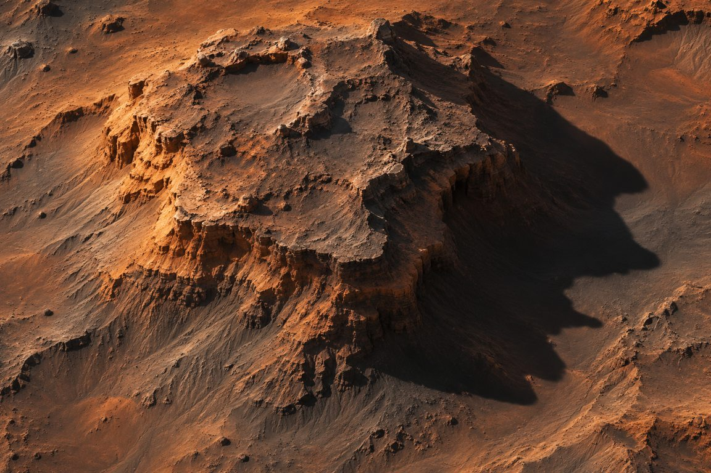
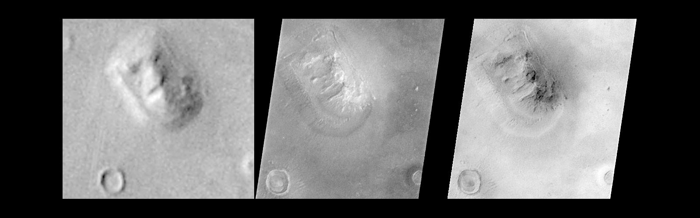

Face on Mars: Official Image Reanalysis
Compare the original impression of a face in Cydonia with NASA’s later, higher-resolution images. The case shows how lighting and resolution can change what a landform appears to be.

On this page
Summary
Face on Mars is probably the most famous example of modern planetary pareidolia. The usefulness of this note is not only in recording that NASA considers it a natural formation, but in making clear how an image can lose its monument aura when resolution, lighting and topographic context change.
What does the source actually contain?
The NASA page is brief, but enough to establish several operational points:
- refers to a high-resolution image obtained by Mars Global Surveyor in 1998
- implicitly compares that image with the Viking captures that fueled the original reading
- emphasizes that the appearance of
rostrodepended strongly on the solar angle and shading - presents the case as an example of an exaggerated interpretation of a natural formation
Why it matters within X Files
- It is a key institutional piece for the most iconic myth of Mars
- allows you to explain with a simple case the difference between
suggestive imageandmaterial evidence - helps sort other Martian anomalies by analogy: if a shape depends on shading, its evidentiary strength is low
- serves as obligatory counterpoint to any note that scaletes from Cydonia to ancient civilizations
Useful metadata
| Field | Data |
|---|---|
| Source | NASA Science |
| Original post visible | 2012-04-01 |
| Last visible update | 2024-11-01 |
| Instrument mentioned | Mars Orbiter Camera (MOC) |
| Mission | Mars Global Surveyor (MGS) |
| Image date cited | 1998-04-05 |
| Region | Cydonia |
Minimum historical case structure
1) Phase Viking
Old images of the region showed a relief whose combination of low resolution and side light activated a powerful facial reading: forehead, eyes, nose, mouth.
2) Mythical phase
The image left the geological context and entered the cultural circuit. From there the Face came to represent:
- ruins on mars
- possible ancient civilization
- suspicion of institutional cover-up
- gateway to Cydonia as
artificial complex
3) Re-observation phase
With Mars Global Surveyor, NASA gets better images. The feature still exists, but the human form weakens when the terrain is viewed in more detail.
4) Exemplary reading phase
The case becomes a classic example of how a visual hypothesis can fail without the need for fraud or manipulation: just better data is enough.
What the official reanalysis shows


Instrumental improvement
The jump in resolution matters because many details that previously seemed like strong symmetries dissolve into the natural roughness of the relief.
Lighting change
The Face relied heavily on a specific combination of light and shadow. By changing the lighting, the relief loses its legibility as a face.
Topographic context
When the feature is read as part of a field of eroded mesas, it stops looking like a single isolated object and starts looking like a local variation of a broader landscape.
Main claims of the source
- the iconic image was reinterpreted with better quality data
- anthropomorphic appearance is highly dependent on capture conditions
- the official reading is natural formation, not artificial structure
- the case is useful as an example of pareidolia in planetary observation
Why Face was so culturally compelling
- a human face is one of the easiest patterns for the brain to detect
- Mars already carried a previous tradition of canals, cities and possible civilization
- The image arrived at a time when the distance from daily verification was high
- the conspiracy story makes very good use of unique and photogenic objects
Critical reading
What it does show
- that the case depends strongly on limits of observation and not only on arbitrary subjective interpretation
- that better images can displace a strong visual hypothesis without needing to deny the historical interest of the case
- that the Face is an excellent example of how a modern anomaly is born
What it does not prove
- that all Martian anomalies are automatically pareidolia
- that the cultural history of Cydonia is irrelevant
- that the Martian imaginary is pure error without an emotional or observational basis
Useful interpretation
The Face is not important because proved ruins. It is important because it taught the classic X Files pattern applied to planetary science:
1. striking image
2. anthropomorphic interpretation
3. cultural amplification
4. instrumental review
5. descent of the strong hypothesis
Derived rule of thumb
If another Martian anomaly depends primarily on a single image, limited resolution, or dramatic shadowing, it should be treated first as a possible methodological relative of Face.
Related
Cydonia: Martian Mystery Region Mars X Files: Anomalies vs Official Readings Mars Canals: Schiaparelli, Lowell, and the Interpretive Error Mars X Files Map Research map Archive home